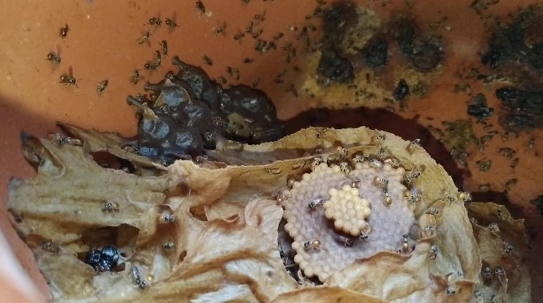
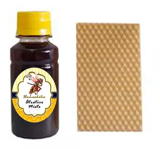

Curiosidades
Mel medicinal: O mel produzido por abelhas mirins é muito apreciado por suas
propriedades medicinais, sendo mais fluido, com sabor ácido-doce e produzido em menor quantidade que o mel comum.
regiões.

Coméia de Abelha Mirim (Plebeia droryana)
Colônias duradouras: Colônias duradouras: As colônias de abelhas mirins podem sobreviver por muitos anos,
desde que tenham alimento suficiente e estejam protegidas. A rainha pode viver por vários anos, enquanto as operárias têm uma vida mais curta.
Meliponicultura crescente: Meliponicultura crescente: A criação de abelhas mirins (meliponicultura) tem ganhado popularidade no
Brasil devido à demanda por seu mel exótico e pelos benefícios ambientais de suas atividades de polinização. Essas abelhas são adaptadas ao
clima tropical, tornando-as uma opção interessante para pequenos agricultores.
